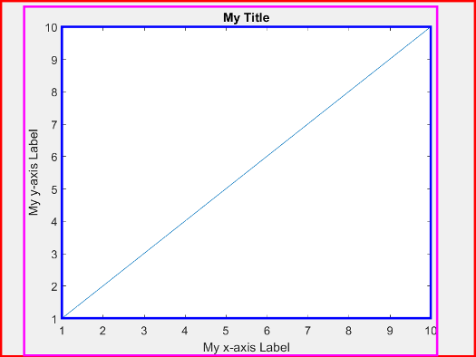
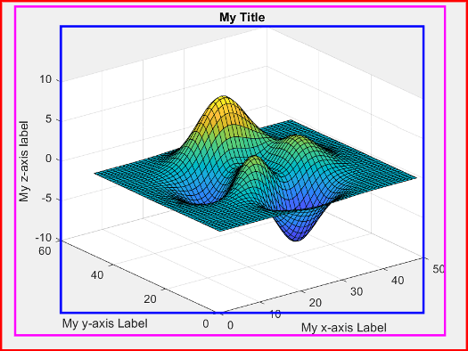
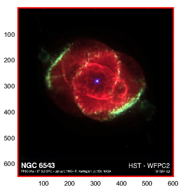
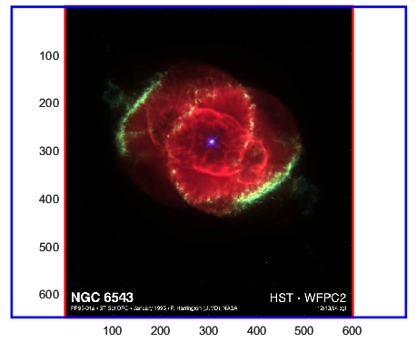
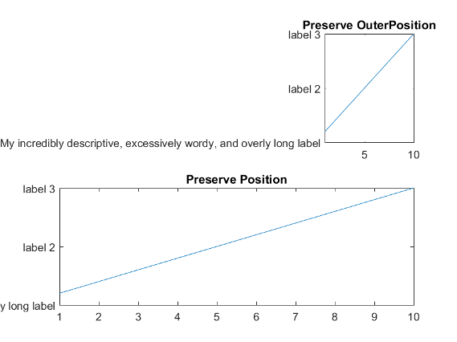
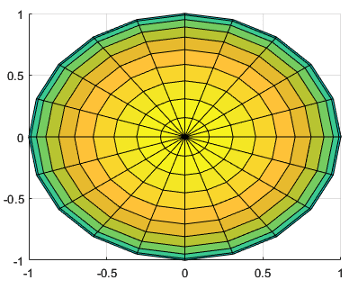
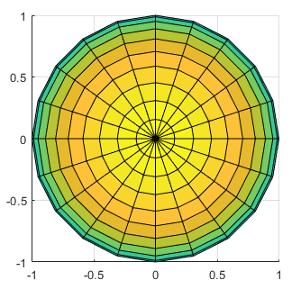

Control Axes Layout
Position-Related Properties and Functions
There are several properties and functions for getting and setting the size and location of the axes. This table provides a summary.
| Function or Property | Description |
|---|---|
| Use this property to query or change the outer boundary
of the axes, including the title, labels, and a margin. To
change the outer boundary, specify this property as a vector
of the form |
| Use this property to query or change the plotting area,
which is typically bounded by the plot box. This area
excludes the title, labels, and a margin around the title
and labels. To change the size of the plotting area, specify
this property as a vector of the form |
| Use this function to query the plotting area, which is
typically bounded by the plot box. The function often
returns more accurate size and location information than the
|
| Use this property to query the margins around the plot
box for titles, tick labels, and axis labels. When you add
axis labels and a title, MATLAB® updates this property to accommodate the text.
The size of the boundary defined by the
|
| Use this property to query or control whether the
plotting area (inside the axes) or the outer boundary of the
axes is preserved when adding titles or labels. To change
which aspect of the axes is preserved, specify this property
as |
Units property | Use this property to query or change the units of the
axes position values. The value must be set to
|
| Use this function to make adjustments to the axes limits or aspect ratio without having to perform calculations or set specific properties. For example:
|
Position and Margin Boundaries
This figure shows a 2-D view of the axes areas defined by the
OuterPosition values (red), the Position
values (blue), and the Position expanded by the
TightInset values
(magenta).

This figure shows a 3-D view of the axes areas defined by the
OuterPosition values (red), the Position
values (blue), and the Position expanded by
the TightInset values
(magenta).

Position for Square or Constrained Aspect Ratios
Since R2022b
If your axes has a constrained aspect ratio, for example, if you are plotting an
image, the Position property and
tightPosition function return different results. Use either of them
depending on the type of presentation you want to create.
For example, display an image. Use the axis function to preserve the
aspect ratio of the image.
figure C = imread("ngc6543a.jpg"); ax = axes; image(C) axis image
Get the position vector by calling the tightPosition
function. Use the vector to draw a red rectangle around the image that is currently
displayed in the axes.
tpos = tightPosition(ax); annotation("rectangle",tpos,Color="red",LineWidth=2)

Get another position vector by querying the Position property
of the axes. Use the vector to draw a blue rectangle that defines the plotting area
for a similarly sized image, but with the default aspect ratio. The values in this
vector might be useful for querying the overall image area when displaying a
succession of multiple images that have different aspect ratios.
pos = ax.Position; annotation("rectangle",pos,Color="blue",LineWidth=2)

Controlling Automatic Resize Behavior
Some scenarios can trigger the Axes object to
automatically resize. For example, interactively resizing the figure or adding a
title or axis labels activates automatic resizing. Sometimes, the new axes size
cannot satisfy both the Position and
OuterPosition values, so the
PositionConstraint property indicates which values to
preserve.
Specify the PositionConstraint property as one of these values:
"outerposition"— Preserve theOuterPositionvalue. Use this option when you do not want the axes or any of the surrounding text to extend beyond a certain outer boundary. MATLAB adjusts the size of the inner area of the axes (where plots appear) to try to fit the contents within the outer boundary."innerposition"— Preserve theInnerPositionvalue. Use this option when you want the inner area of the axes to remain a certain size within the figure. This option sometimes causes text to run off the figure.
Usually, leaving the PositionConstraint property set to
"outerposition" is preferable. However, an overly long axes
title or labels can shrink the inner area of your axes to a size that is hard to
read. In such a case, keeping the inner axes to a specific size can be preferable,
even if the surrounding text runs off the figure.
For example, create a figure with two axes and specify the same width and height
for each axes position. Set the PositionConstraint property to
"outerposition" for the upper axes and to
"innerposition" for the lower axes. Notice that in the upper
axes, the inner area shrinks to accommodate the text, but the text does not run
outside the figure. In the lower axes, the size of the inner area is preserved, but
some of the text is cut off.
figure; ax1 = axes("Position",[0.13 0.58 0.77 0.34]); ax1.PositionConstraint = "outerposition"; plot(ax1,1:10) title(ax1,"Preserve OuterPosition") yticklabels(ax1,["My incredibly descriptive, excessively wordy, and overly long label",... "label 2","label 3"]) ax2 = axes("Position",[0.13 0.11 0.77 0.34]); ax2.PositionConstraint = "innerposition"; plot(ax2,1:10) title(ax2,"Preserve Position") yticklabels(ax2,["My incredibly descriptive, excessively wordy, and overly long label",... "label 2","label 3"])

Stretch-to-Fill Behavior
By default, MATLAB stretches the axes to fill the available space. This
“stretch-to-fill” behavior can cause some distortion. The axes might
not exactly match the data aspect ratio, plot box aspect ratio, and camera-view
angle values stored in the DataAspectRatio,
PlotBoxAspectRatio, and CameraViewAngle
properties. The “stretch-to-fill” behavior is enabled when the
DataAspectRatioMode,
PlotBoxAspectRatioMode, and
CameraViewAngleMode properties of the Axes object are set to "auto".
If you specify the data aspect ratio, plot box aspect ratio, or camera-view angle, then the "stretch-to-fill" behavior is disabled. When the "stretch-to-fill" behavior is disabled, MATLAB makes the axes as large as possible within the available space and strictly adheres to the property values so that there is no distortion.
For example, this figure shows the same plot with and without the "stretch-to-fill" behavior enabled. In both versions, the data aspect ratio, plot box aspect ratio, and camera-view angle values are the same. However, in the left plot, the stretching introduces some distortion.
| Stretch-to-fill enabled (some distortion) | Stretch-to-fill disabled (no distortion) |
|---|---|

|

|
See Also
Functions
axes|tiledlayout|title|daspect|pbaspect